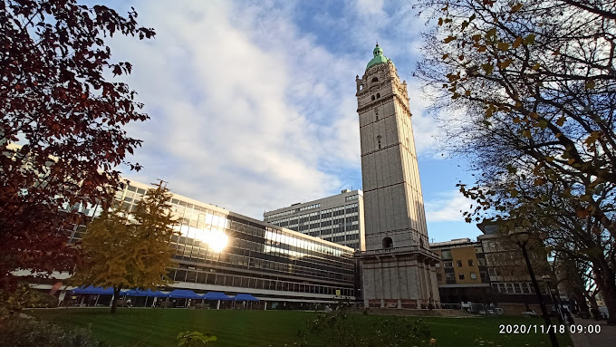

Imperial College London is a world-class public research university specializing exclusively in science, engineering, medicine, and business. Founded in 1907 and situated in the cultural hub of South Kensington, London, it is widely ranked among the top universities globally—frequently securing the No. 2 spot in the world. As a member of the elite "Golden Triangle" alongside Oxford and Cambridge, Imperial is renowned for its intense research focus, high post-graduation employment rates, and a diverse, international student body dedicated to solving complex, real-world technological and medical challenges.